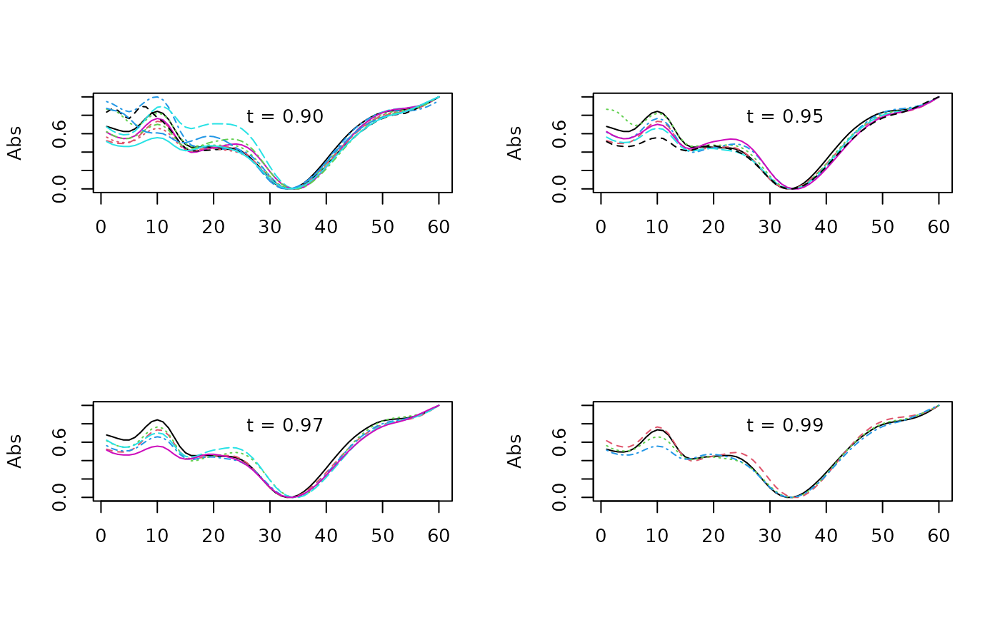
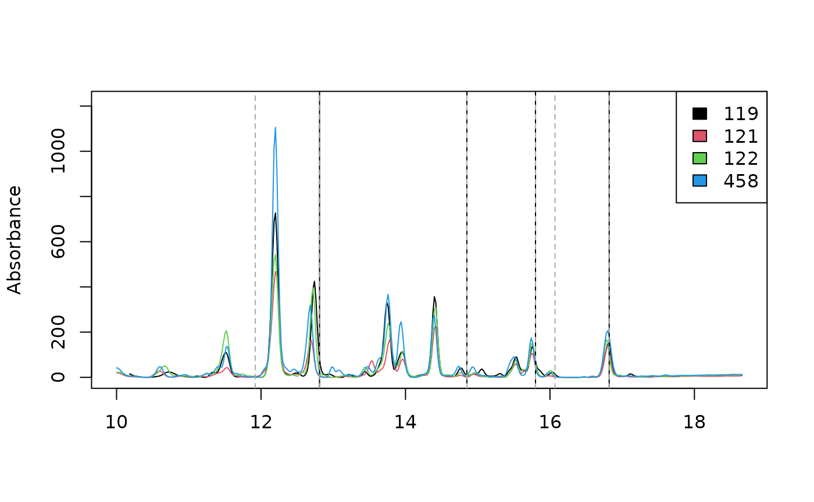
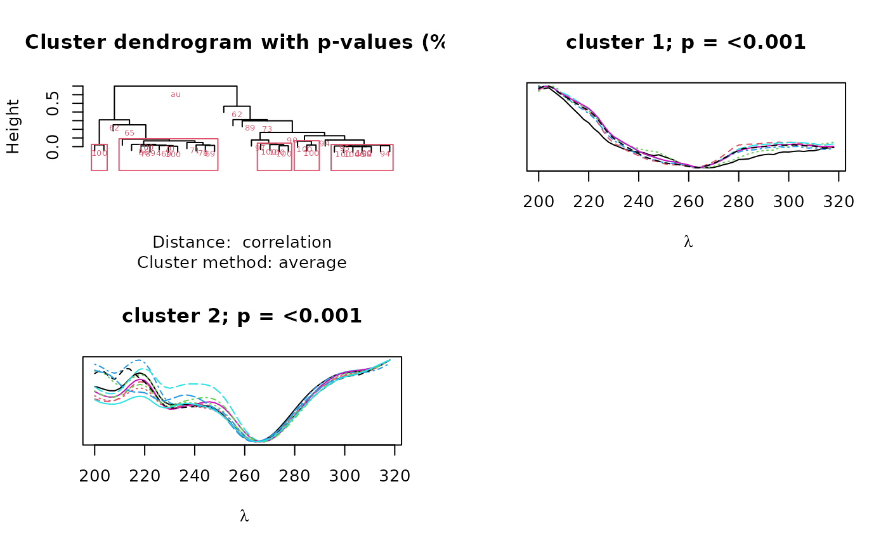

library(chromatographR)
data("Sa_warp")
data("pk_tab")
pks <- get_peaks(Sa_warp,lambdas=210)
pktab <- get_peaktable(pks)
pktab <- attach_ref_spectra(pktab, ref = "max.cor")
plot_spectrum(peak_table = pk_tab, what="click", idx=1, lambda=210)
plot_all_spectra("V50", pk_tab)
plot_all_spectra("V7", pk_tab)
lines(get_lambdas(pk_tab), pk_tab$ref_spectra[,"V7"],type='l',col="pink")After assigning reference spectra to our peak table, we can use
pearson correlations to easily locate peaks falling within a certain
similarity threshold to a reference spectrum. To do this, we must first
construct correlation matrix using the cor function.
cor_mat <- cor(pktab$ref_spectra)We can then plot spectra falling within a desired similarity
threshold (t) to a reference peak (in this case ‘V21’).
par(mfrow=c(2,2))
idx_90 <- which(cor_mat[,"V21"] > .9)
matplot(pktab$ref_spectra[,idx_90],type='l', ylab="Abs")
legend("top", "t = 0.90", bty = "n")
idx_95 <- which(cor_mat[,"V21"] > .95)
matplot(pktab$ref_spectra[,idx_95],type='l', ylab="Abs")
legend("top", "t = 0.95", bty = "n")
idx_97 <- which(cor_mat[,"V21"] > .97)
matplot(pktab$ref_spectra[,idx_97],type='l', ylab="Abs")
legend("top", "t = 0.97", bty = "n")
idx_99 <- which(cor_mat[,"V21"] > .99)
matplot(pktab$ref_spectra[,idx_99],type='l', ylab="Abs")
legend("top", "t = 0.99", bty = "n")
We can also extract retention times for spectra above the desired spectral similarity threshold with the reference spectra.
rts_99 = pk_tab$pk_meta["rt", idx_99]
rts_99
#> V9 V17 V21 V26
#> rt 12.81 14.85 15.8 16.82Below we plot traces of our four chromatograms at 210 nm. The 4 peaks that match the reference spectrum at the 99% level are marked with solid black lines and the 6 peaks that match the reference spectrum at the 97% level are marked with dotted gray lines.
par(mfrow = c(1, 1))
plot_chroms(Sa_warp, lambdas=210)
abline(v = rts_99)
abline(v = pk_tab$pk_meta["rt", idx_97], lty=2, col = "darkgray")
If we are interested in the combined area of these peaks, we could also use these indices to sum them together.
apply(pktab$tab[,idx_99], 1, sum)
#> 119 121 122 458
#> 143.6671 100.9055 112.6122 171.6950chromatographR also includes a function
(cluster_spectra) to group spectra using hierarchical
clustering. We can set the seed with the iseed argument to
ensure repeatability among instantiations of this vignette. For
simplicity, we use the argument max.only = TRUE to return
only the largest clusters.
par(mfrow=c(2,2))
cl <- cluster_spectra(pktab, alpha = 0.01, iseed = 1, max.only = TRUE)
The output is a dendrogram of peaks annotated with bootstrap values
showing the support for each node and spectra of the clusters with
p-values below the significance level specified by alpha.
In this case, we recovered two clusters, representing two different
classes of compounds distinguished by their chromophores. The second
cluster closely matches the spectrum represented by peak ‘V21’. We can
access the peaks in cluster 2 as follows:
cl2 <- cl$clusters$c2@peaks
cl2
#> [1] "V6" "V9" "V11" "V14" "V15" "V17" "V19" "V21" "V22" "V23" "V26"In this case, the peaks in cluster 2 happen to overlap completely with the peaks recovered through pearson correlation at the 90% threshold.